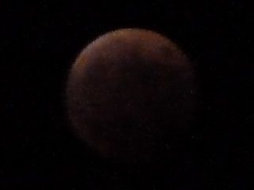
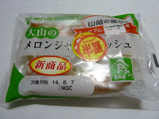
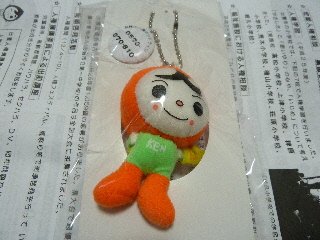

出雲市民の方はプレミアム商品券の応募はしましたか？
2015/06/05
12000円分の商品券が10000円で買えるプレミアム商品券の締め切りがもうすぐです。
葉書を出し忘れていませんか？
引き換えの時にお金がなければ引き換えに行かなきゃいいんですよね？
当たっても買わなけれいいんですよね？
なので気軽な気分で私は応募しました。
皆さんはどうします？
2015/06/05
12000円分の商品券が10000円で買えるプレミアム商品券の締め切りがもうすぐです。
葉書を出し忘れていませんか？
引き換えの時にお金がなければ引き換えに行かなきゃいいんですよね？
当たっても買わなけれいいんですよね？
なので気軽な気分で私は応募しました。
皆さんはどうします？
2014/10/08
普段月を長々見ることなんてないですが、今日は月食なのでのんびりとながめました。
綺麗でした。

見れて良かった。
2014/08/30
今日は晴れ間があっていい天気でしたね。
でも雲もしっかりあって、わりと涼しかったです。
快適なんですけど、夏が終わった感じがしまた。
８月は土日によく雨が降りましたね。
なんか何もしないで終わっちゃったなー。
なんとなく歳をとった気がする。
2014/08/07
神戸屋のパンの山陰ものが半額でした。

半額はうれしいけど、山陰のもが売れ残ってるのはちょっと悲しい。
今日はスーパーに2軒行ったんですけど、両方とも半額でした。
もしかして両店とも大量に仕入れたのかな？
メロンジヤムってありそうだけど、食べることってないかも？
この機会に食べてみるのはいかがでしょうか。
2014/06/01
スーパーで人形を配っていました。

6/1は人権擁護委員の日だそうで、それにちなんで配っていたようです。
やなせたかしさんデザインで、凝ったつくりのマスコットです。
いいものです。
どこに飾ろうかな？
ちょっと大きいので、付けるとこないかな？
景色の写真っていいですね。